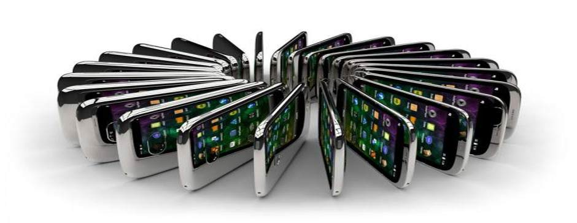

Teléfono inteligente (smartphone)
Un teléfono inteligente (smartphone en inglés) es un teléfono móvil construido sobre una plataforma informática móvil, con una mayor capacidad de almacenar datos y realizar actividades semejantes a una minicomputadora y conectividad que un teléfono móvil convencional. El término «inteligente» hace referencia a la capacidad de usarse como un ordenador de bolsillo, llegando incluso a reemplazar a un ordenador personal en algunos casos. El término "teléfono inteligente" (o smartphone en inglés) es un término meramente comercial, ya que los teléfonos no piensan ni razonan como los humanos.
Generalmente, los teléfonos con pantallas táctiles son los llamados "teléfonos inteligentes", pero el completo soporte al correo electrónico parece ser una característica indispensable encontrada en todos los modelos existentes y anunciados desde 2007. Casi todos los teléfonos inteligentes también permiten al usuario instalar programas adicionales, normalmente inclusive desde terceros, hecho que dota a estos teléfonos de muchísimas aplicaciones en diferentes terrenos, pero algunos vendedores gustan de tildar a sus teléfonos como inteligentes aun cuando no tienen esa característica.
los teléfonos inteligentes permiten la instalación de programas
Entre otras características comunes está la función multitarea, el acceso a Internet vía Wi-Fi o red 3G, función multimedia (cámara y reproductor de videos/mp3), a los programas de agenda, administración de contactos, acelerómetros, GPS y algunos programas de navegación, así como ocasionalmente la habilidad de leer documentos de negocios en variedad de formatos como PDF y Microsoft Office.
Soporte de banda
Mientras más bandas de radio pueda soportar un teléfono, más frecuencias podrá usar. Los teléfonos de cuatro bandas operan a lo largo de cuatro frecuencias, por lo tanto, en teoría proporcionan una mejor cobertura en comparación con cualquier otro teléfono móvil que sea tribanda, banda dual o banda simple.
Estos teléfonos de cuatro bandas también han sido llamados teléfonos inteligentes mundiales ya que son compatibles con las cuatro frecuencias GSM prevalentes en casi todo el mundo. Por lo tanto pueden funcionar en cualquier parte. Sin embargo, siempre comprueba con tu operador de servicio para su compatibilidad.
Diseño
Hay tantos diseños como teléfonos inteligentes y teléfonos móviles, es más un aspecto de preferencia personal el que se escoja un diseño u otro. Sin embargo, además de esa personal preferencia por un modelo o diseño dados, considera si te conviene con tapa o sin ella, tapa deslizante o de abrir, teclado cubierto, ampliado, comodidad para usar las teclas o leer la pantalla. Puede parecer un aspecto relativamente irrelevante, pero no lo es.

hay tantos diseños como teléfonos
Algunos ejemplos de teléfonos denominados inteligentes son: Serie iPhone de Apple, Serie Optimus de LG, Serie BlackBerry de BlackBerry, Serie RAZR de Motorola, Serie Lumia de Nokia, Serie Idol y Pop de Alcatel, Serie Nexus de Google, Serie One de HTC, Serie Xperia de Sony Mobile Communications, Serie Galaxy de Samsung, Serie Ascend de Huawei, Serie Grand de ZTE.
Sistemas operativos
Los sistemas operativos móviles más frecuentes utilizados por los teléfonos inteligentes son Android (de Google), iOS (de Apple), Symbian (de Nokia), BlackBerry OS (de BlackBerry) y Windows Phone (de Microsoft). Otros sistemas operativos de menor uso son Firefox OS (de Mozilla), Bada (de Samsung), MeeGo (de Moblin y Maemo), webOS, Windows CE, etc. Desde 2012 se ha anunciado Ubuntu Touch como próximo contendiente en este segmento.
Según datos del tercer trimestre de 2012 en cuanto a uso de sistemas operativos móviles en teléfonos inteligentes en todo el mundo, estos fueron los resultados:
Android 72,4 %, iOS 13,9 %, BlackBerry OS 5,3 %, Symbian OS 2,6 %, Windows Phone 2,4 %, Bada 3,0 %, Ubuntu Touch 0 %, Otros 0,4 %